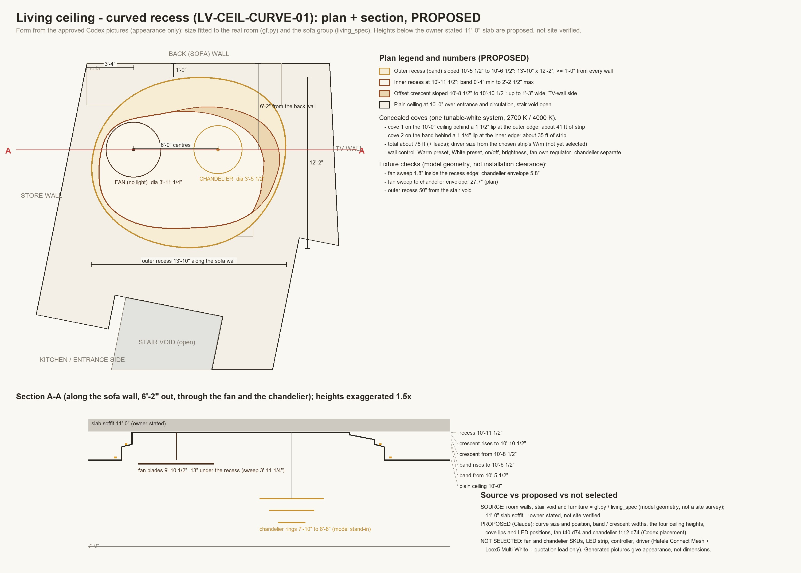

The ceiling view: a real camera looking up sees the ceiling mirrored. Our render is flipped left-right here so it reads like the approved picture (a reflected ceiling plan): store wall left, TV wall right, back wall at the top.

Chandelier is off in these comparison views, as in the approved pictures. Same camera, exposure and white balance for warm and white: only the two concealed coves change colour. The fan and chandelier positions follow the Codex plan (fan 3'-4" along the back wall, both 6'-2" out, 6'-0" apart).